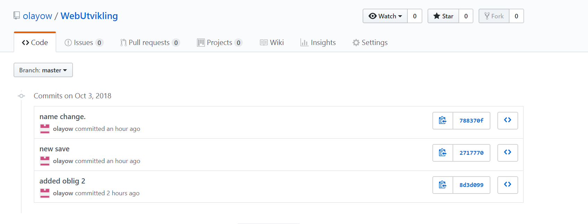

Git/Github
You are new to programming and have probably heared about Git and Github. The
social network for programmers
and coders as they say. What does it do exactly and why do we need that tool in programming? You may
have
search it on wikipedia and it says a version control system.
Git was created by Linux’ founder Linus Torvalds in 2005. It is an open-source software. Gits primary
function is called version control. Version control is the system used by software developers to track
changes in a file, program, or documents. By using this, it is more secure and orderly on your
projects. Using Git can be a huge benefit to you personally or your team. Having to use Git, it is now
easier to manage and track the history of a source code. In simplier terms, it is where you store your
source-codes in an orderly way and with a great tracking.
Github is a git-repository hosting service. It was founded on 2008 by Tom Werner, Chris Wanstrath and
P.J. Hyett. Imagine having a system like Git. While you can share your source-codes in Git with you
team, you cant do it if you are not on a same network area. In Github you can collaborate with you
team, and edit projects in repositories. It is a cloud servic so you can access it using the web.
Github lets you share and track changes. Everytime you save your work in Github, it creates a copy. So
the next time that unfortunate things happen if your computer crash, you can have the last version of
your code secured. Collaborating with your team is also monitored and changes dont overwrite each
other. You can share and make changes in open-source projects with Github. It is a useful tool one can
have in the developer world.
Here is an example of my last commit on Github:
